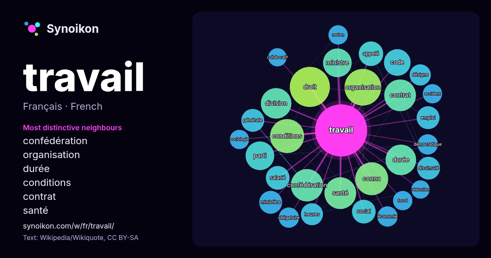

Français · mot populaire
travail
“work” · Les mots trouvés autour de lui dans 1267 occurrences issues de Wikipédia, Wikiquote.

Voisins les plus spécifiques
- confédération 26×
- organisation 24×
- durée 19×
- conditions 19×
- contrat 18×
- santé 17×
- droit 15×
- dissimulé 15×
- salarié 14×
- code 14×
- connu 13×
- division 12×
- emploi 11×
- obligatoire 11×
- ministre 11×
- forcé 10×
- sociologie 10×
- désigne 10×
- social 10.0×
- collaboratif 9.9×
× = combien de fois plus souvent que dans le texte général de Wikipédia.
Voisins les plus fréquents
- droit 43
- france 37
- organisation 36
- conditions 31
- temps 31
- connu 29
- confédération 28
- contrat 27
- santé 27
- division 25
- durée 25
- ministre 22
- parti 22
- lieu 21
- code 19
- également 18
- appelé 16
- enfants 16
- forme 16
- groupe 16
En contexte
- Pour les articles homonymes, voir Travail (homonymie). Dans un sens très général, le travail est une activité humaine qui vise intentionnellement à transformer Wikipedia snippets · Travail
- France Travail Logo de France Travail. France Travail, anciennement Pôle emploi jusqu'au 31 décembre 2023, est un établissement public à caractère administratif Wikipedia snippets · France Travail
- Pour les articles homonymes, voir Travail (homonymie). En physique, le travail d'une force désigne la quantité d'énergie transférée par cette force à un Wikipedia snippets · Travail d'une force
- Pour les articles homonymes, voir CGT et Confédération générale du travail (homonymie). Les informations figurant dans cet article ou cette section doivent Wikipedia snippets · Confédération générale du travail
- Cet article peut contenir un travail inédit ou des déclarations non vérifiées (janvier 2016). Vous pouvez aider en ajoutant des références ou en supprimant Wikipedia snippets · Division du travail
- informations à des références à l'aide d'appels de notes. Un travail collaboratif est un travail qui n'est plus fondé sur l'organisation hiérarchisée traditionnelle Wikipedia snippets · Travail collaboratif
- Vous lisez un « bon article » labellisé en 2007. Le travail des enfants est la participation de personnes mineures à des activités à finalité économique Wikipedia snippets · Travail des enfants
- autres articles nationaux ou selon les autres juridictions, voir Contrat de travail. Cet article concernant le droit doit être recyclé (novembre 2014). Une Wikipedia snippets · Contrat de travail en France
Autres mots
- art
- automne
- carte
- chanson
- chat
- chemin
- cheval
- chien
- climat
- cloche
- cœur
- dieu
- désert
- eau
- famille
- forêt
- histoire
- hiver
- horloge
- jardin
- langue
- miel
- miroir
- monnaie
- montagne
- mort
- mère
- nature
- nourriture
- ombre
- pain
- pluie
- pont
- pouvoir
- printemps
- santé
- science
- sel
- silence
- temps
- tempête
- thé
- train
- trésor
- vie
- ville
- vérité
- étoile
- île
Précalculé le 2026-10-09 avec les paramètres par défaut (±5 mots, corpus moyen). La carte interactive peut l’actualiser avec des données en direct.
Interface traduite automatiquement ; corrections bienvenues.